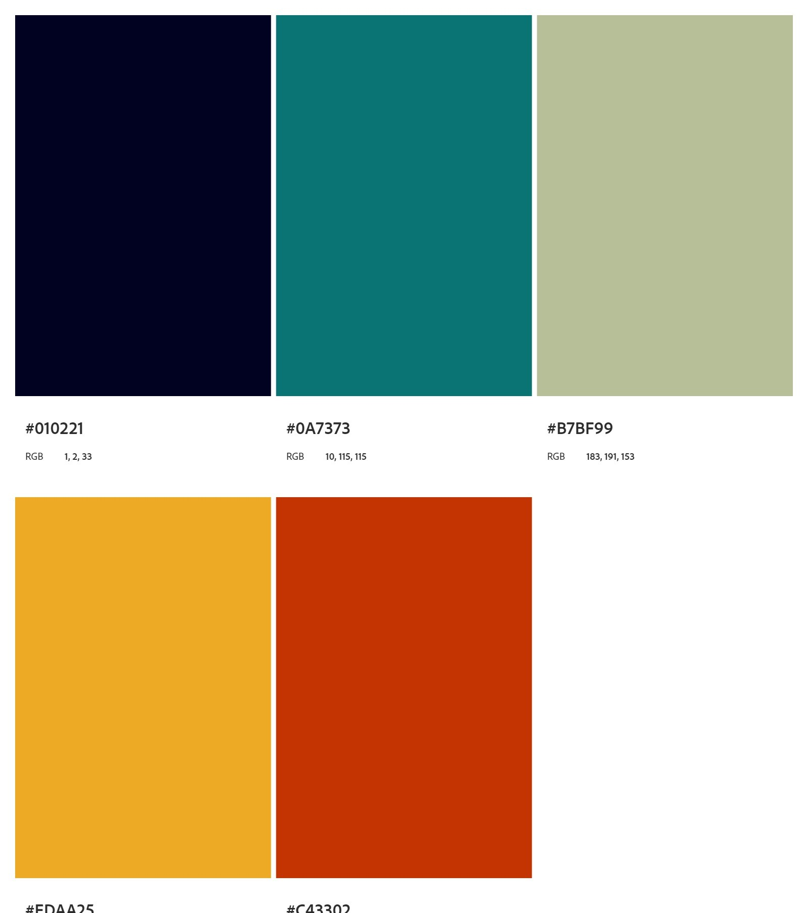

Requirements
color Schema
These are the colors that I have chosen for this Project: #01021 - #0A7373 - #B7BF99 - #C43302.
Typography
My first election was Vollkorn, a member of the Serif typeface. My second election is DM Sans a member of the Sans Serif typeface. I think that It is an excellent combination of typefaces for this project.
Site Name
The name of the project would be the Lujan Chamber of Commerce.
Scenarios
Lujan is a tourist city and textile. The Cathedral of Lujan is visited by many people by year. there are a lot of historic places, restaurants, places for games and horse rides. In addition, existing companies' textiles are very important in the economy of the region. The scenario is satisfactory for developing the project.
Wireframe
Here are the links to the wireframe sketches:
Wireframe computer screenWireframe mobile screen